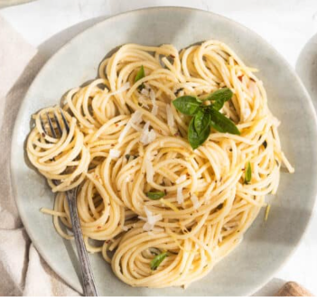

This is a simple and delicious garlic butter pasta recipe that can be made in under

Description: Flavor Profile: Rich, savory, and aromatic. The pungent bite of fresh garlic softens into a nutty, sweet richness as it gently browns in melted butter, complemented by the sharp heat of red pepper flakes and the bright freshness of parsley. Texture & Feel: Smooth, glossy, and coating. When pasta water mixes with the melted butter, it creates a light emulsion that clings to every strand without feeling greasy or heavy. Culinary Context: Inspired by traditional Italian Aglio e Olio (Garlic and Oil), this dish represents the essence of minimalist cooking—transforming kitchen staples into a high-satisfaction comfort meal in under 15 minutes.